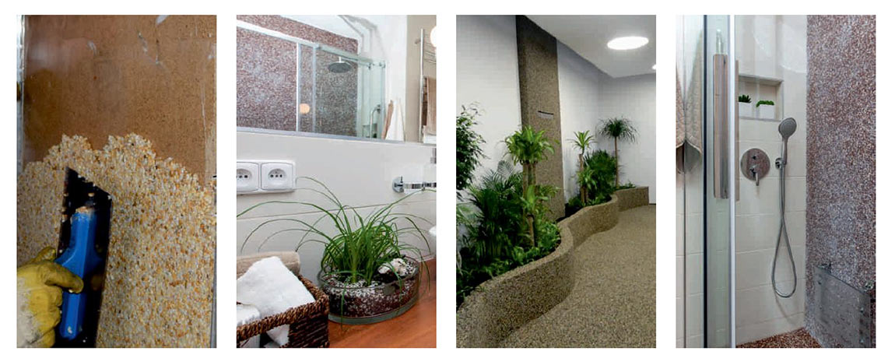

- 2 w 1 – grunt jest częścią głównego składnika spoiwa
- Wysoka odporność na wodę, odporność chemiczna
- Wysoka wytrzymałość i odporność na ścieranie
- Zastosowanie na powierzchniach pionowych (bez deskowania)
- Zastosowanie do nieograniczonej wysokości
- Drenażowa
- Szybkie utwardzanie
- Wygodna I szybka aplikacja
- Podstopnice schodów, “policzki” schodów, cokoły, murki
- Możliwość stosowania do wszelkiego rodzaju prac na powierzchniach pionowych i poziomych
- Użycie do wewnątrz i na zewnątrz (kuchnie, prysznice, schody, ściany, wiszące ściany, naprawy kolumn, dekoracje, ściany z
drewna ,ściany za kominkami- do 100 °C ...)
- Po zastosowaniu do pomieszczeń mokrych (prysznice ..) zaleca się system TopWall zamknąć produktem TopGel.
Zastosowanie 1: 7 (spoiwo: wypełniacz) – zgodnie z info na opakowaniu. Proporcje mieszanki 1,58: 1 (Część A: część B) Opakowanie 3,6 kg –wagowo A-2.21kg: B-1.39kg Urabialności ok. 45 minut zależnie od temp
Zalecane grubości kruszywa 2-4 mm i 3-5 mm
Opakowania detaliczne: 3,6 kg, 2,1 kg
Opakowanie 3,6 kg wystarcza na wykonanie ok. 1,5 – 2 m2 powierzchni pionowych zależnie od grubości warstwy. Materiał typu – dwa w jednym: żywica właściwa dwuskładnikowa która jest jednoczesnie żywicą gruntującą. Przy aplikacji z opakowania 3,6 kg: 0,45 kg –zużyjemy jako grunt + pozostałe 3,15 kg spoiwa łączymy z 25 kg kruszywa.
W temperaturze> 12 °C <+ 25 °C, w suchym miejscu, w oryginalnym opakowaniu. Okres gwarancji-zobacz na etykiecie
Skład chemiczny - mieszanina żywicy epoksydowej ze specjalnie opracowanym systemem utwardzania. 28. 2. 2016, ver. 2 TopWall
1. Zmieszać składnik A i składnik B w proporcjach zgodnie z opisem na opakowaniu.
2. Zalecane jest przewd zmieszaniem podzielenie opakowania A i B oraz odpowiedniej ilości kruszywa na 4 części I mieszanie oraz aplikowanie małymi porcjami.
3. Po wymieszaniu odejmij materiał do gruntowania i wykonaj gruntowanie szpachelka lub paca gumowa - Uważaj mieszanina jest bardzo gęsta. Stosujemy zasadę mokre na mokre.
4. Dodaj wypełniacz-kruszywo - zalecana frakcja 2-5 mm i 2-4 mm dokładnie wymieszać! Mieszanina musi być jednorodna !
5. Aplikuj pacą/szpachelką na powierzchnie pionowe zaczynając od dolnej krawędzi i stopniowo przesuwaj materiał do góry. Celem zagęszczenia rozprowadzaj dalej materiał ściągając go pacą w dolnym kierunku.
Uwaga: Często czyścić szpachle (pacę) acetonem technicznym lub użyć do czyszczenia specjalnego TopCleaneru (TopCleaner -bez zapachu, paruje powoli, co sprawia, że po aplikacji powstaje cienki film na pacy, który zmniejsza przyczepność żywicy do pacy – wydłuża to czas pracy bez konieczności czyszczenia pacy.

Klasyfikacja - ADR. A9 i kol. C3. Szczegółowe informacje zawarte są w karcie charakterystyki. Sposoby gaszenia ognia - suchy piasek, piana odporna na alkohole, CO,2 NIE UŻYWAĆ WODY !!!